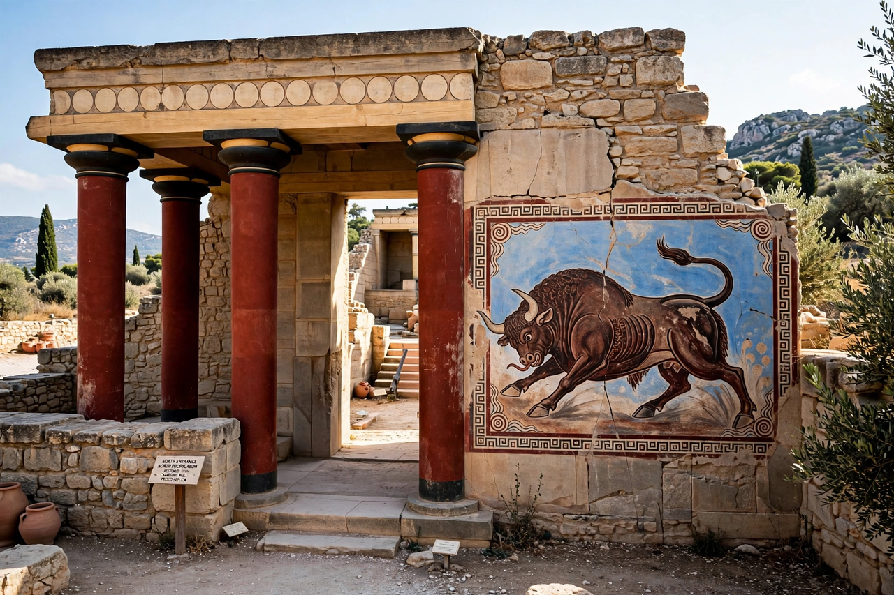

Minoan civilization

Location: Crete, Aegean Sea
Period: c. 3100 – c. 1100 BCE
Major centres: Knossos, Phaistos, Malia, Zakros
Scripts: Cretan hieroglyphs, Linear A (undeciphered)
The Minoan civilization was a Bronze Age culture centred on the island of Crete in the Aegean Sea, flourishing from about 3100 to 1100 BCE. Named by archaeologist Arthur Evans after the legendary King Minos, it is regarded as one of the earliest advanced civilizations in Europe, noted for its monumental palace complexes, vivid frescoes, seaborne trade and still-undeciphered writing systems.
History
Crete was settled by farmers from Anatolia by around 7000 BCE. After a long Prepalatial period, the first great palaces were built around 1900 BCE at Knossos, Phaistos, Malia and Zakros. Destroyed by earthquake around 1700 BCE, they were rebuilt on a grander scale in the Neopalatial period, when Minoan influence spread across the Aegean. Around 1450 BCE the palaces were destroyed — a collapse linked to the eruption of Thera (Santorini), Mycenaean invasion, or both — and Crete passed under Mycenaean control, after which Greek-speakers administered Knossos using Linear B.
Society and culture
Minoan art is famous for naturalistic frescoes of bull-leaping, dolphins, lilies and processions, fine pottery (Kamares and Marine styles), seal stones and jewellery. Religious imagery includes priestess figures, snake goddesses, horns of consecration and double axes (labrys). The apparent prominence of women in art and the scarcity of fortifications have often been remarked upon. Minoan ships traded with Egypt, the Levant, Cyprus and the Greek mainland.
Writing
The Minoans used Cretan hieroglyphs and then Linear A, neither deciphered; the famous Phaistos Disc remains unique. Linear B, adapted from Linear A to write Greek, was deciphered by Michael Ventris in 1952.
Decline
After 1450 BCE only Knossos continued as an administrative centre under Mycenaean rule until its destruction around 1375 BCE. Minoan culture faded during the early Iron Age, though its memory survived in Greek myth — Minos, the Labyrinth, the Minotaur, Daedalus and Icarus.
See also: Mycenaean Greece · Bronze Age · Crete